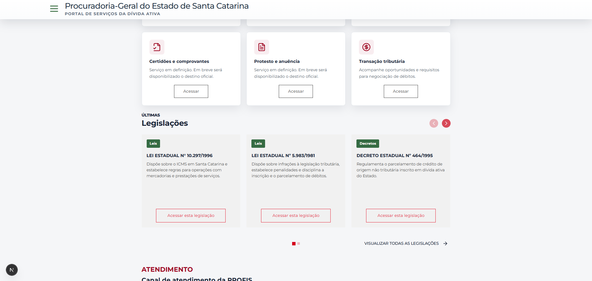
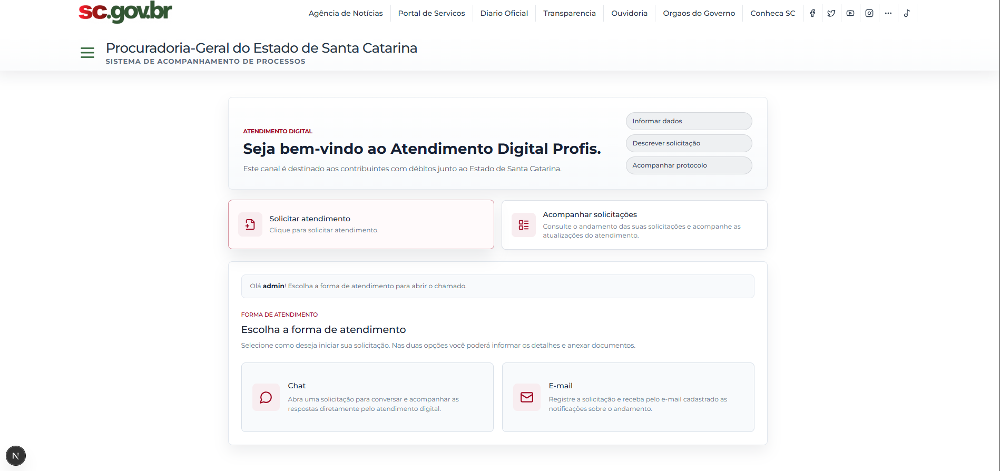
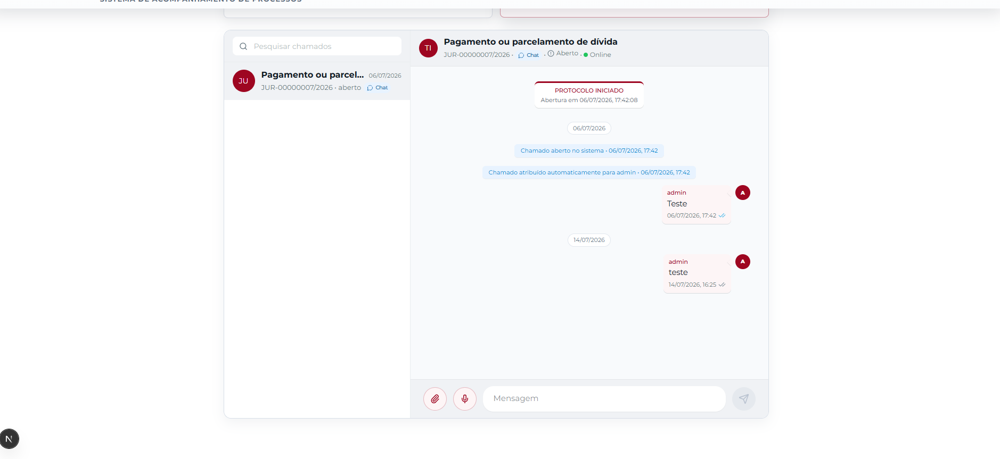

Módulo 04
Atendimento Profis
Duas frentes no mesmo módulo: o Portal público da Dívida Ativa, onde o cidadão consulta débitos inscritos, emite guia de pagamento e encontra requisitos de parcelamento, transação tributária e legislação; e a central de atendimento Profis, que recebe essas solicitações e as conduz por triagem, setores, técnicos, anexos, respostas por portal/e-mail, mensagens internas e monitoramento da equipe. Segue o padrão da Plataforma PGE, com Docker Compose para frontend, backend e banco.

O que entrega
- Portal público da Dívida Ativa: consulta de débitos, guia de pagamento e transação tributária
- Jornada guiada “Consulte → Regularize → Acompanhe” ligada ao canal Profis
- Páginas de parcelamento e legislações com requisitos e base legal
- Abertura pública de chamados Profis com documentos e protocolo
- Fila operacional com status, prioridades, técnicos e setor atual
- Chat interno flutuante, badges numéricos e alertas sonoros
- Histórico, anexos, respostas por portal/e-mail e avaliação
- Monitoramento de técnicos, produtividade e transferência entre setores
Frontend
Backend e dados
Integrações e operação
Área pública com consulta de débitos no SAT, emissão de guia pelo número da inscrição, parcelamento, transação tributária, certidões e a base legal reunida em legislacoes.
Serviços frontend, backend e db, publicados em 3010, 8010 e 5445.
O chamado nasce pelo portal, recebe setor/categoria, passa por triagem técnica e mantém histórico, anexos e comunicação com o solicitante.
O backend expõe mensagens-internas, typing status, marcação de leitura e badges para trabalho em equipe.
Galeria do módulo
Telas reais do Portal da Dívida Ativa e da central de atendimento Profis em execução local.
Aviso: os dados apresentados neste portfólio são públicos.




